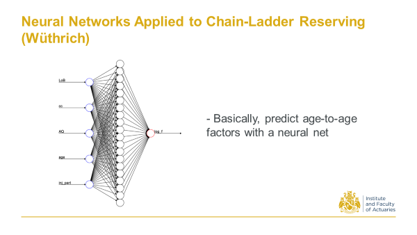
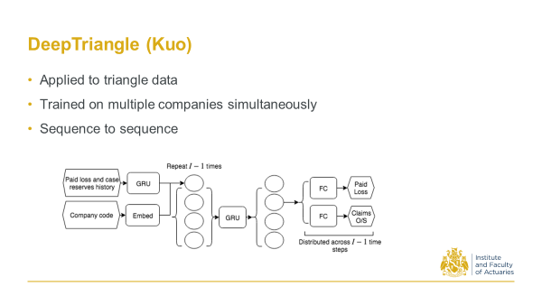
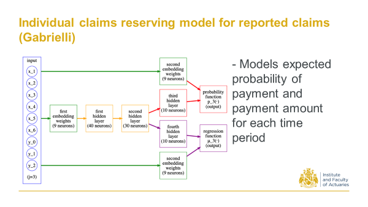
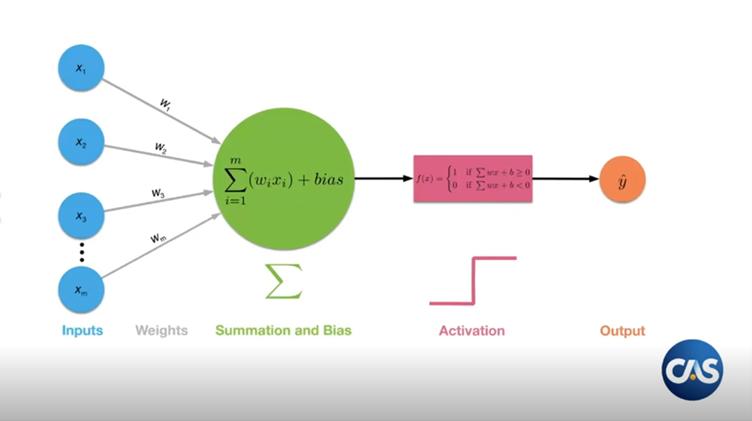
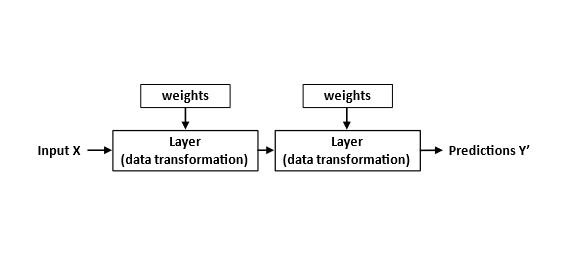

13 A brief history of papers looking at using neural networks in reserving
This article was written by Kevin Kuo and originally published on 26 July 2021. The content was first presented at the CAS Casualty Loss Reserving Seminar, the CIA Appointed Actuary Virtual Seminar and at GIRO in the Autumn of 2020. The presentation can be viewed here.
13.1 How are neural networks being used in reserving?
There are a number of steps in between, say, a process of taking your Excel template from last quarter, copying the data, and then selecting factors, to having a fully automated individual claims reserving system. For example, a process might involve organising where the data is coming from, having a robust and automated process to do the data transformations, all the way to taking the results and putting them in a report and disseminating those results. If you don’t already have those steps figured out you might better spend your time resolving these steps first before diving into machine learning.
In my opinion none of the existing published methodologies will be deployed into production as they currently stand. That is not to say that these are pie in the sky concepts that are not relevant in real life, it’s just that we are, as a field, pretty early into the journey of figuring out what works and what doesn’t. In fact I’m pretty confident that whatever people are building today in companies, or will be building in the next year or two, they will definitely incorporate concepts that have been introduced in these papers.
Don’t underestimate how quickly technology moves, even in a somewhat relatively slower moving industry such as ours. It takes just a couple of companies who really care to move things forward a bit. I think we’ve hit critical mass already in terms of the talent and awareness of machine learning in industry.
I think machine learning on claims is particularly interesting because it has applications beyond reserving. If you think about it, if you’re able to forecast future cashflows for each individual claim you can use that information as part of a claims triaging process or other claims analytics applications.
It is worth pointing out that there are other approaches other than neural networks to all of this, but here we are just focusing on neural networks. If you are unfamiliar with neural networks, then scroll down to the end of this article for a brief, high level introduction (or click on the the two question marks here to jump down to this section: (nn-intro?)).
13.2 The papers
The first thing you will notice when looking at the list of papers is that by actuarial literature standards this is pretty recent work. We are at the intersection of insurance and machine learning, so that the speed at which this has grown is somewhere between those two fields. Another thing you will notice is that we don’t have too much diversity at this point - it is the same 4 or 5 people putting out papers every year. But as we do a better job of promoting this content and inviting people to contribute, I am hopeful we will get more perspectives in the coming years.
13.2.1 2017 Wuthrich, M. V. Neural Networks Applied to Chain-Ladder Reserving
Back in 2017 Mario Wuthrich at ETH Zurich, first proposed a Neural Network that takes some triangle characteristics to predict age to age factors. That’s all it was - a pretty straight-forward application to triangles.

13.2.2 2018 - Kuo, K. DeepTriangle: A deep learning approach to loss reserving.
In 2018, as a response to the CAS reserving call for papers programme, I proposed an architecture that takes sequences of paid losses and case reserves. This used Schedule P data on triangles. It then feeds those sequences through a recurrent neural net to output sequences of future payments and claims outstanding amounts.

13.2.3 2019 Gabrielli, A. A neural network boosted double overdispersed Poisson claims reserving model.
Around the same time Andrea Garbielli at ETH, one of Mario Wuthrich’s students, proposed this. You start with a triangle, and then look at the ODP model predictions and then train a neural net. The neural net initialises to give the ODP predictions, but you train on the residuals, so it’s sort of a boosting process (as evidenced in the title).
 And as a follow up to that work he also incorporated claim counts in addition to the claim amounts, and then performed what we call a ‘multitask learning’ in the neural net to predict both quantities simultaneously with better accuracy.
And as a follow up to that work he also incorporated claim counts in addition to the claim amounts, and then performed what we call a ‘multitask learning’ in the neural net to predict both quantities simultaneously with better accuracy.

13.2.4 2020 Kuo, K. Individual Claims Forecasting with Bayesian Mixture Density Networks.
In 2019/20 I was looking at individual claims forecasts. This used encoder-decoder architecture, and took sequences of cashflows of individual claims, as well as the static claims characteristics, to come up with paid loss and recovery distributions. So the main contribution here was to develop a way that we can get distributions of the future cash flows, in addition to just the point estimates.

13.2.5 2020 Delong, L., M. Lindholm, and M. V. Wüthrich. Collective Reserving using Individual Claims Data.
Also in 2020 Delong and collaborators took the claim life cycle, broken down into separate processes. For each of those processes (closer to a first principles approach) they sort of abstract away the stochastic process by parameterising them with neural nets.
13.2.6 2020 Gabrielli, A. An individual Claims Reserving Model for Reported Claims
More recently Gabrielli again attacks the individual claims problem. This is on reported claims. Then from this architecture you can get the expected probability of payments and then the payment amount given there’s a payment for each time period.

So that’s a quick run through. You can see the shift in focus from aggregate triangle methods to individual claims which I think is interesting and a good direction to be moving in, because we have a lot more data with individual claims, and with the more data theoretically we should come up with better estimates and better insights.
13.3 A high level introduction to neural networks
I’ll conclude this article with a high level introduction to neural networks for those unfamiliar with them.
At a high level a neural network is just a function that takes in some inputs and tries to predict an output - much like a generalised linear model (GLM). In fact you can think of a neural network as a bunch of GLMs chained together.

The way it works is that we take our inputs, which we can think of as a vector, and then apply a number of matrix multiplications to it, ie neural network transformations. Between the matrix multiplications we have to add some sort of non-linearity to keep things interesting. These are known as the activations. Why do we need the non-linearity? Going back to linear algebra 101 - if we compose a series of linear transformations together we just end up with another linear transformation, which is not very interesting nor particularly flexible.
The picture below is another way that we can look at it. You have some inputs, and then layers, that you can think of as matrices, and then the weights are just entries in the matrix.

So we initially predict some values with our neural nets. In the beginning it’s not going to be great - if we compare them to the true targets it’s going to be way off. But then we can quantify how unhappy we are with these predictions using measures like mean square error (MSE).
For example, if we take the difference between the predicted and actual payment amount in some future time period, we can go back and tweak the weights a little bit.
The idea is that we do this over and over again until we have a model that provides reasonable predictions. This process will be analogous to say, iteratively reweighted least squares in a GLM context.